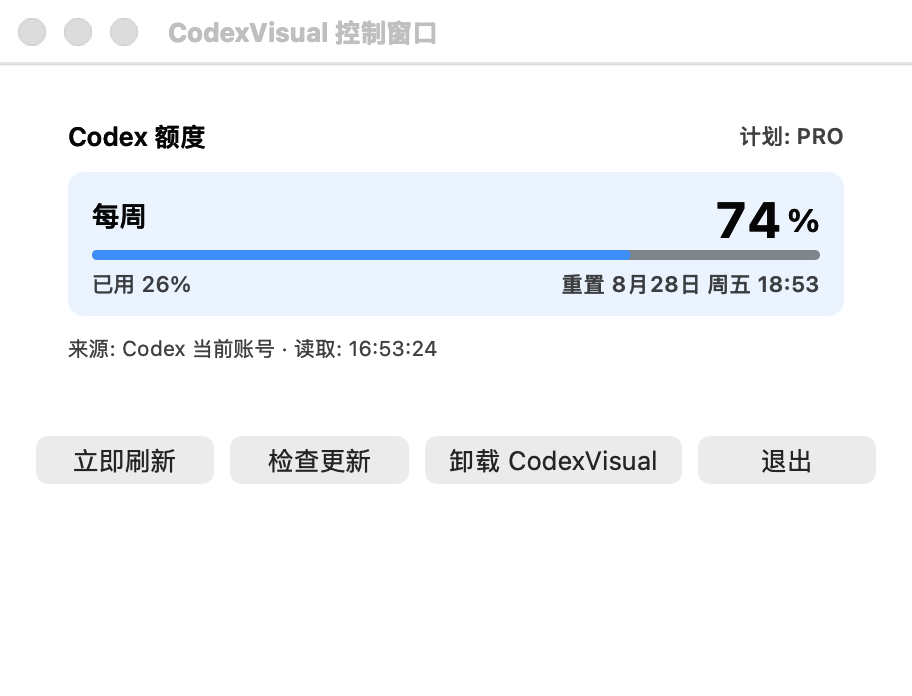

苹果电脑与微软视窗系统
无需打开其他面板，即可查看剩余比例与重置时间。
免费 · 开源 · 无订阅

专注而简洁
不显示单独的五小时卡片，也没有多余的模型分类。
清楚知道每周额度何时恢复。
无需密钥，也不依赖外部额度读取服务。
简明问答
显示账号每周额度、剩余比例与重置倒计时，不再显示单独的五小时卡片。
不需要。本工具在本机读取额度数据，也不会读取身份验证文件。
支持苹果电脑系统十三或更高版本，以及微软视窗系统。苹果电脑版已经完成签名与公证。
当前版本 1.0.18